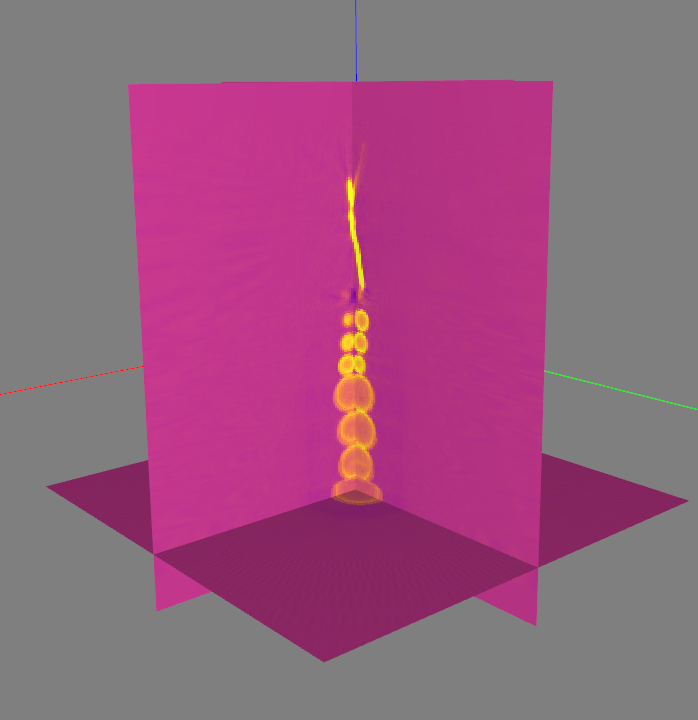
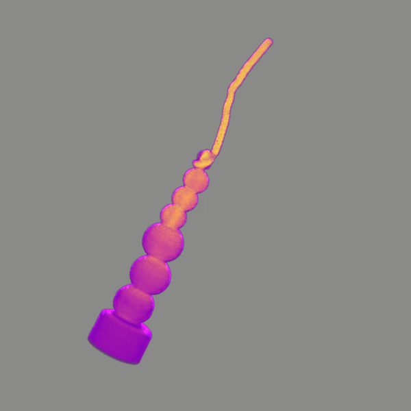

Plastic beads (3D)
Introduction
In this hands-on tutorial, we will take a look at how we can use RECASTX to explore a 3D dataset from a static tomography scan.
Prerequisites
This tutorial assumes you have already followed our installation guide to install the reconstruction server and the GUI client on a server machine and a client machine, respectively. You will also need to install foamstream on the server machine in order to stream the data from files.
We are going to use the plastic beeds dataset offered by
TomoBank. Go to the homepage, and then navigate
to Datasets/KBLT and download the file 2_plastic_beeds_RGB.h5.
You can also find the description of the dataset there.
Running
Streaming the data
Open a terminal and run:
You can find the shapes of the Dark, Flat and Projection images from the output of foamstream.Starting the reconstruction server
Open another terminal and run:
Note
The volume-size, which defines the resolution of the "low-resolution"
volume, is set to 512 in this case. As a result, the resolution of the
reconstructed volume is indeed high. It should be noted that it thus takes
longer time to perform the reconstruction and send the reconstructed volume
from the server to the client. Therefore, the default value of volume-size
is set to 128 and is recommended to use in dynamic tomography.
Starting the GUI client
Open a terminal and run:
Set the following parameters in the GUI:
- Set
Column Count,Row CountandAngle Countto 130, 400 and 200, respectively. - Tick
360 degreeradio button. - Set
Volume Sizeto 512. - Set
X rangeandY rangeto [-256, 256].
Make sure the SCAN MODE is set to Discrete and click the Process button.

